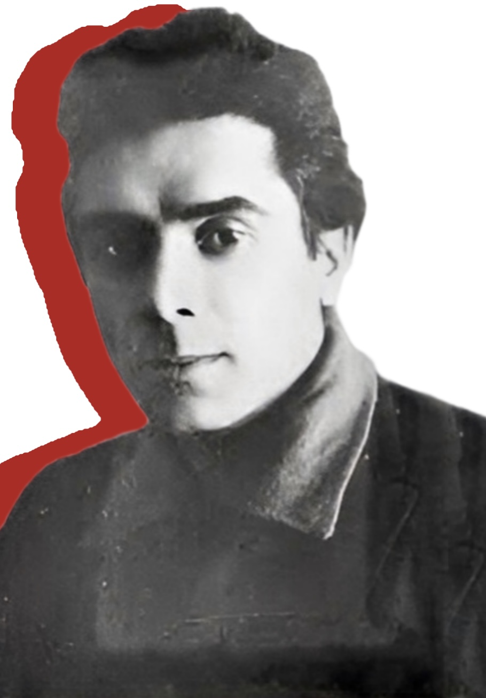
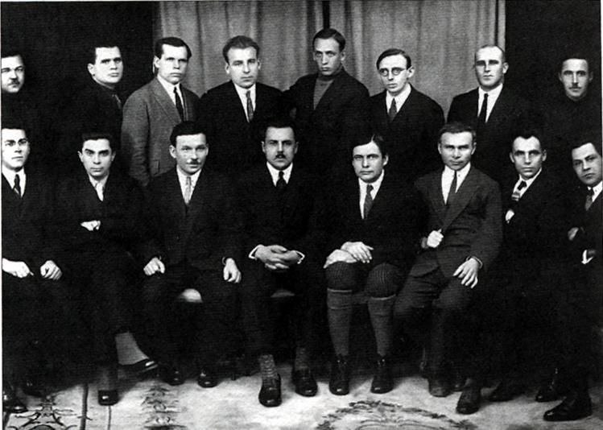

Микола Хвильовий
1893-1933
«По суті кажучи, ми живемо зовсім не для того, щоб жити, а для того, щоб умерти. Така наша воля. Решта — не більше як ілюзія»
1893-1933
«По суті кажучи, ми живемо зовсім не для того, щоб жити, а для того, щоб умерти. Така наша воля. Решта — не більше як ілюзія»
Микола Хвильовий- це видатний український письменник, публіцист та громадський діяч, який відіграв ключову роль у формуванні української літератури XX століття. Він був одним із засновників українського модернізму, а його твори відзначаються глибоким психологізмом, філософськими роздумами та яскравою образністю.
Хвильовий став символом українського національного відродження 1920-х років, а його гасло "Геть від Москви!" стало закликом до незалежності української культури.
Микола Хвильовий (справжнє прізвище – Фітільов) народився 13 грудня 1893 року у селі Тростянець на Харківщині (нині – Сумська область) у родині вчителів.
Його батько походив зі збіднілих дворян і великопанські манери химерно поєднувалися в нього з народницькими ідеалами, так, відомо, що він любив випити, на дітей, а їх було п’ятеро, майже не звертав уваги, за свідоцтвом самого Хвильового, батько був «в высшей степени безалаберным человеком». Мати теж походила із дворян і у родині розмовляли виключно російською мовою.
У 1904 році сім’я Фітільових розпалася: мати не витримала так званих «дворянських» вибриків чоловіка. Відомо, що разом з дітьми вона залишила Тростянець і переїхала у село Зубівка до своєї сестри, яка жила в маєтку свого чоловіка – земського начальника і поміщика Смаковського. Його донька пізніше згадувала: «… майбутній письменник не відзначався великою ретельністю до науки. Зате пристрасть до читання мав надзвичайно сильну. Читав російську класику, твори Діккенса, Гюго, Флобера, Гофмана... Був справжнім «бібліофагом» – пожирачем книг… діставав багато книжок у бібліотеці поміщиці Савич, маєток якої був недалеко від маєтку Смаковських… Захоплювався він також біографіями великих людей, зокрема, біографією Ніцше».
Малий Микола спочатку навчався в початковій школі, де вчителювала його мати. Згодом продовжив навчання в Охтирській чоловічій гімназії, але звідти його виключили за участь у «так званому українському революційному гуртку».З Богодухівської гімназії, куди його вдалося влаштувати, теж був виключений за зв'язки із соціалістами під час революційних заворушень.
У Богодухові освітою і вихованням Миколи займався сам Смаковський. Лариса Смаковська розповідала, що її батько мав проблеми з племінником, через «зв’язки Миколи з нелегальними політичними гуртками... Серед його товаришів було досить буйних голів із табору соціалістів-революціонерів. М. Смаковському начальство порадило, нарешті, взяти небожа з гімназії й тримати його під своїм наглядом. Так, далі п’ятої кляси гімназії й не пішла освіта майбутнього письменника. Микола мусів вийти в світ і заробляти собі шматок хліба». Хвильовому, за його ж словами, «на ту пору було 16 –17 років» і він став «робітником із Донбасу»: працював чорноробом, вантажником, підвозив цеглу, вугілля…
Коли розпочалася війна 1914 року, Микола Фітільов підлягав мобілізації. Згодом, у листопаді 1924 року, він написав у листі до Миколи Зерова: «3 роки походів, голодовки, справжнього жаху, який описати я не ризикну, 3 роки голгофи в квадраті на далеких полях Галичини, в Карпатах, Румунії і т. ін. ... все це я витримав фізично, проте морально це випробування мене надломило. Цей період свого життя я можу характеризувати як період повного духовного занепаду. Ні про яку ідейну роботу я вже не міг мріяти, тому що бачив я тільки одну безконечну «похідну» дорогу, на якій чекало мене безхліб’я, гарматний гул і сіра маса безликих людей. Тільки в 1916 р., коли я був переведений у дев’яту хімічну команду рядовим «постійного складу», мені довелося зустріти живих людей, і там я раптом згадав, що я все-таки людина, а не заведений автомат».
Лютнева революція 1917 року застала Миколу Фітільова в Румунії. Його обрали до складу полкової ради солдатських депутатів, а потім – депутатом армійського з’їзду 9-ї армії.
Починаючи з 1917 року він публікував свої фейлетони та вірші у воєнних фронтових газетах під псевдонімом «Дядько Микола». Вишкіл в окопах війни й громадянська війна сформували в ньому переконаного більшовика. На чолі повстанського загону, який він організував наприкінці 1918 року на Харківщині, воював проти гетьманців, німців, дроздовців, армії УНР. У квітні 1919 року Микола Фітільов вступив до КП(б)У. Того ж року одружився з учителькою – Катериною Гащенко, але через 2 роки шлюб з нею розпався.
На початку 1921 року, залишивши дружину з маленькою дочкою, письменник переїхав до Харкова. Спочатку працював слюсарем на заводі, потім влаштувався у видавництво «Червоний Шлях» і з головою занурився в літературну роботу.
Невдовзі він став одним із засновників багатьох тогочасних літературних організацій: спочатку це був «Гарт» (1923), потім – напівофіційна студія «Урбіно», що збиралась у нього на квартирі, ВАПЛІТЕ (1926) – Вільна академія пролетарської літератури, яка проіснувала до 1928 року.
У 1927 році Микола Хвильовий приймав активну участь у діяльності Всеукраїнської спілки пролетарських письменників (ВУСПП), а з 1930 року – став організатором літературного об’єднання «Пролітфронт». Його метою було об'єднання всіх кращих літераторів для вільного, нерегламентованого партійними директивами розвитку української літератури.
У розпалі літературної дискусії про шляхи української літератури, яка точилася у 1926– 1928 роки, друкував полемічні статті з роздумами про болючі проблеми національного буття і національно-культурного відродження України. Відомо, що вони були піддані нищівній критиці з боку радянської влади.
Весною 1933 року письменник побував на Полтавщині, де на власні очі побачив трагедію Голодомору. Повернувся з цієї подорожі фізично й морально розбитим.
Після арешту свого товариша – письменника Михайла Ялового, на знак протесту проти масових репресій української творчої інтелігенції покінчив життя самогубством. Це сталося 13 травня 1933 року в Харкові, у будинку письменників «Слово». Твори та ім'я Хвильового були забороненими до останніх років існування тоталітарного режиму в Україні. Його поховали на міському цвинтарі. Невдовзі там розбили парк, а могилу Хвильового зрівняли із землею.
У Харкові встановлено меморіальну дошку на місці будинку, де з 1923 по 1930 рік проживав Микола Хвильовий. У місті Тростянець Сумської області у 2003 році було встановлено меморіальну дошку на будинку, де письменник мешкав з 1893 по 1904 рік.
У селі Колонтаїв Краснокутської селищної ради Богодухівського району Харківської області 13 травня 2021 року на фасаді Колонтаївського ліцею, де навчався в початковій школі Хвильовий, було відкрито меморіальну дошку.
Новела «Я (Романтика)» введена у програму з української літератури середньої школи.

1. Хвильовий був чекістом.
Насправді жодних підтверджень цьому немає. Навпаки, як уже згадувалося
вище, – він був в’язнем ЧК.
2.Хвильовий був людиною з постійним веселим характером.
Існують свідчення, що Хвильовий зловживав алкоголем, та був
невротиком. На його нерви вплинула Перша світова війна та воєнні дії
1918–1921 років.
3. Хвильовий не вчиняв самогубство, його застрелили.
По-перше, людина мала суїцидальні схильності, але головне те, що
подібні версії ніколи не звучали від тих, хто належав до близького
кола письменника, зокрема дружин Куліша і Йогансена, які під час
Другої світової виїхали на Захід.
Кажуть, що “13” було улюбленим числом Миколи Хвильового, бо він і
народився, і пішов із життя 13 числа, й у передсмертній записці сам
про це написав.
його день смерті – це просто прикрий збіг обставин, адже
напередодні арештували його товариша Михайла Ялового, і коли він
зрозумів, що це не помилка і виходу вже немає, а він стане наступним,
то наважився на цей акт відчаю. Ані в поетичній, ані в прозовій
творчості не спостерігається культу цього числа.